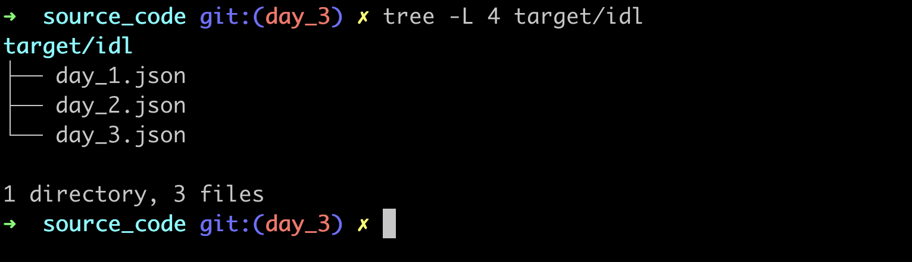
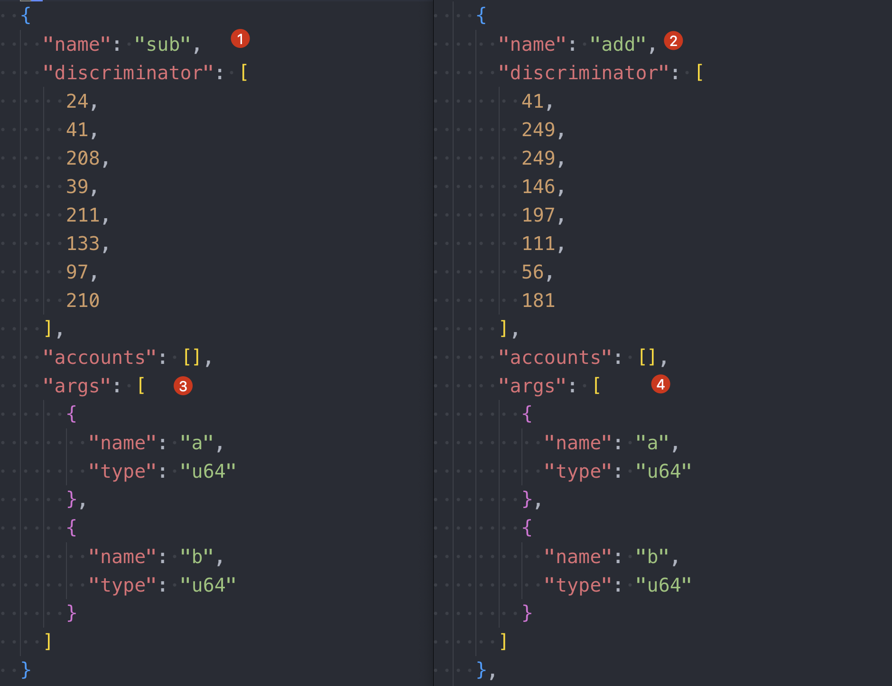
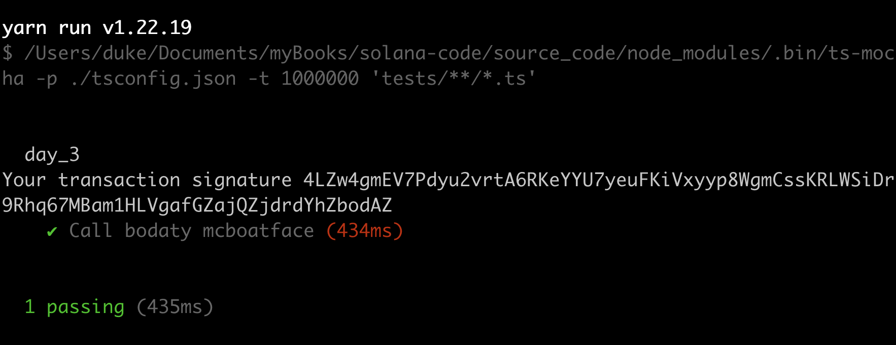
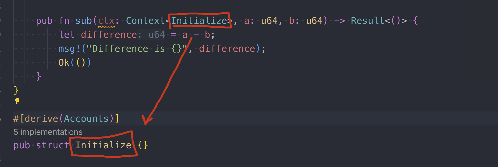

ANCHOR PROGRAM IDL
IDL
The IDL(Interface Definition Language) is a Json file that describes how to interfact with solana program, it's the same concept of What ABI(Application Binary Interface) to Ethereum.
You can find the whole Source code under branch day_3:
git checkout day_3
No Param Fn
create a new program by command
anchor new day_3
update day_3/src/lib.rs as below:
use anchor_lang::prelude::*;
// this id would be generated automatically by the new command
declare_id!("69QhaCVcUsq5n6cSfx2TyoCve4wHY2Fzreu8aEET5x5g");
#[program]
pub mod day_3 {
use super::*;
// this is new!!
pub fn boaty_mc_boatface(ctx: Context) -> Result<()> {
Ok(())
}
}
#[derive(Accounts)]
pub struct Initialize {}
create file: tests/day_3.ts and put the code to:
import * as anchor from "@coral-xyz/anchor";
import { Program } from "@coral-xyz/anchor";
import { Day3 } from "../target/types/day_3";
describe("day_3", () => {
// Configure the client to use the local cluster.
anchor.setProvider(anchor.AnchorProvider.env());
const program = anchor.workspace.Day3 as Program;
it.only("Call bodaty mcboatface", async () => {
const tx = await program.methods.boatyMcBoatface().rpc();
console.log("Your transaction signature", tx);
})
});
Execute: anchor build and you can find the idl files under folder: target/idl

Open day_3.json and take a look at the checkpoints from: 1~4
{
"address": "69QhaCVcUsq5n6cSfx2TyoCve4wHY2Fzreu8aEET5x5g",
"metadata": {
"name": "day_3", // checkpoint1: program name.
"version": "0.1.0",
"spec": "0.1.0",
"description": "Created with Anchor"
},
"instructions": [
{
"name": "boatyMcBoatface", // checkpoint2: function name, it converts to camel case.
"discriminator": [
74,
55,
233,
42,
15,
104,
59,
136
],
"accounts": [], // checkpoint3: empty, will discuss this later.
"args": [] // checkpoint4: empty, cos we dont pass anything.
}
]
}
With Param Fn
add two more functions to day_3/src/lib.rs and build again.
pub fn add(ctx: Context, a: u64, b: u64) -> Result<()> {
let sum = a + b;
msg!("Sum is {}", sum);
Ok(())
}
pub fn sub(ctx: Context, a: u64, b: u64) -> Result<()> {
let difference = a - b;
msg!("Difference is {}", difference);
Ok(())
}
check target/idl/day_3.json, apart from the stale info, we can see the ABI of the new functions easily.

run anchor test --skip-local-validator to test. you can try to restart the local validator if failed, and delete folder target and build again it keeps failing, under most cases you would succeed.

Initialize Struct
this Initialize within ctx: Context is not a keyword, it can be any arbitrary string, as long as it's consistent with the defination under #[derive(Accounts)]

we can create a new program to test it out
anchor new day_3_1
update the code to:
use anchor_lang::prelude::*;
declare_id!("Ab8YxzsdF4WQnbzxEReNF7qa7P7Jz8zBnXjbiqRaHg4x");
#[program]
pub mod day_3_1 {
use super::*;
// checkpoint1: ArbitraryStr
pub fn non_empty_account_example(ctx: Context) -> Result<()> {
Ok(())
}
}
// checkpoint2
#[derive(Accounts)]
pub struct ArbitraryStr<'info> {
signer: Signer<'info>,
another_signer: Signer<'info>,
}
as you may see, we change the name from Initialize to ArbitraryStr and add two signers. we will cover the Accounts details later, you as for now, you can think it as analogous to tx.origin in Solidity
run anchor build and check target/idl/day_3_1.json, you can see the signers under accounts field:
{
"address": "Ab8YxzsdF4WQnbzxEReNF7qa7P7Jz8zBnXjbiqRaHg4x",
"metadata": {
"name": "day_3_1",
"version": "0.1.0",
"spec": "0.1.0",
"description": "Created with Anchor"
},
"instructions": [
{
"name": "non_empty_account_example",
"discriminator": [
127,
98,
185,
163,
43,
215,
73,
172
],
"accounts": [ // checkpoint1: signers listed here as defined in lib.rs
{
"name": "signer",
"signer": true
},
{
"name": "another_signer",
"signer": true
}
],
"args": []
}
]
}
you can stroll up and see the accounts is an empty array in day_3.json as the default Initializesets to empty in the source code.
Key Takeaways
- There is no concept of
Contructorfunction in solana - IDL is the same as ABI in solidity
Links
- day3 oritinal article : https://www.rareskills.io/post/anchor-idl
- source code: https://github.com/dukedaily/solana-expert-code/tree/day_3